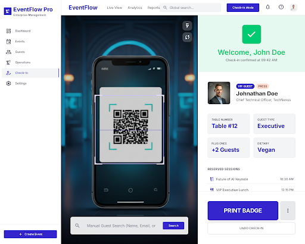
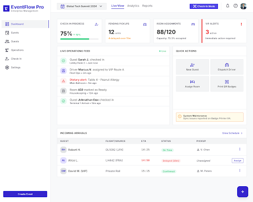
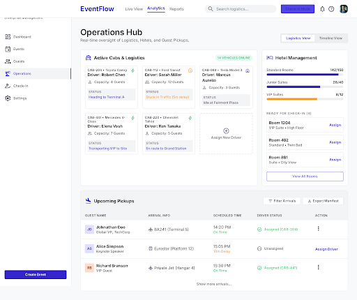
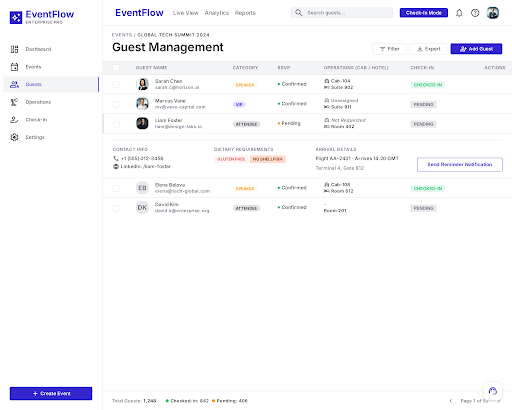
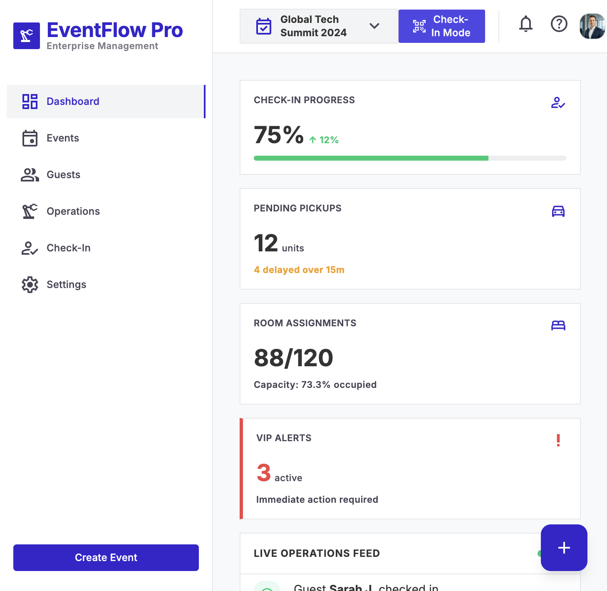

Open login/index.html for Login, Verify OTP, and Mobile Login screenshots plus generated HTML code.





Project: 16429585134276712727 · Fetched via Stitch MCP API
Open login/index.html for Login, Verify OTP, and Mobile Login screenshots plus generated HTML code.




